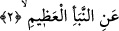

mânâ verilebilir: Mekkeliler hangi büyük şeyi birbirlerine soruyorlar? Mekkeliler
öldükten sonra dirilmenin olup olmayacağını, dünyadaki vücudla mahşere gelinip
gelinmeyeceğini birbirlerine soruyorlardı. Kendi aralarında bu konuyu konuşup ele
alıyorlardı. Ama bu ele alışları, o meselenin gerçeğini soruşturup onun gerçek yüzünü
anlamak için değil, tam tersine böyle bir olayın meydana gelip gelmeyeceğini sormak
biçiminde oluyordu. Bir başka ifâdeyle onların sorusu, “yeniden diriliş”in hallerinden
biri olan “bu olayın meydana gelip gelmeyeceği” noktasında düğümleniyordu.
Âyetin başında yer alan “ma” soru edâtı kural olarak herhangi bir şeyin gerçek yüzünü
ve ne anlama geldiğini öğrenmek için sorulur. Nitekim “me’l-melekü/melek nedir?”,
“me’r-ruhu/ruh nedir?” dediğimizde “mâ” dilbilgisindeki kurallı anlamında kullanılıyor
demektir. Fakat aynı “mâ” ile bazen eşyânın sıfat ve durumu da sorulabilir. Söz gelimi;
“Mâ Zeydun” dendiğinde bununla Zeyd’in kim olduğu değil, “âlim mi yoksa doktor mu
olduğu” sorulmaktadır. Bir başka açıdan bu edatla Zeyd’in durum ve sıfatı soruluyor
demektir.
2. Büyük haberi mi?
“Büyük haberi mi?” Buradaki “en-nebe’” kelimesi, önem ve ağırlığı olan bir haber
demektir. Dolayısıyla “büyük haberi mi?” ifâdesi hem cevaptır hem de sorulan şeyin
önem ve ağırlığını beyan etmektedir. Burada sanki şöyle denmiş olmaktadır: “Onlar
hangi şeyi soruyorlar, sana haber vereyim mi?” Bu sorunun yöneltilmesinden sonra ise
cevap sadedinde şöyle denilmektedir: “Onlar, yaratıkların bilgi sınırları dışında kalan
büyük haberi soruyorlar.” Bu ifâde “Bugün hükümranlık kimindir? Kahhar olan Tek
Allah’ındır” (el-Mü’min 40/16) âyet-i kerîmesi ile benzer bir üsluptadır. Herhangi bir
âyette önce soru sorulup, ardından cevabının gelmesindeki edebî fayda, anlamayı daha
kolaylaştırmak ve açıklamayı daha etkin bir biçimde yapmaktır.
Âyetteki “an” harf-i cerri gizli bir fiile bağlı olup aslında bu fiilin “an” harfinden
önce varmış gibi takdir edilmesi gerekir. Ancak bu harfin önce getirilmesi sebebsiz
değildir. Bununla, yukarda sorulan soruya hemen çabucak cevap verilmeye geçildiğine
işâret edilmekte; ayrıca sorunun tertibine de uyulmuş olmaktadır.
Bâzı âlimler bu âyete mânâ verirlerken; “‘ani’n-nebei’l-azîm” ifâdesini, “e ‘ani’n-
nebei’l-azîm em ‘an gayrihî” şeklinde anlamışlardır. Yâni, “onlar o büyük haberi mi
yoksa başka bir şeyi mi soruşturuyorlar?” biçiminde anlayarak burada bir başka soru
olduğunu ifâde etmişlerdir. Bu îzâha göre, âyetin başındaki soru edâtı hazfedilmiş olsa
da âyet içerisindeki ifâde bu soru edâtının varlığını bize göstermektedir. Bu takdirde, bu
âyet-i kerîme yukarda işâret ettiğimiz Mü’min sûresindeki âyete değil, Enbiyâ
sûresindeki “Şimdi sen ölürsen, sanki onlar ebedî mi kalacaklar” (el-Enbiyâ 21/34)